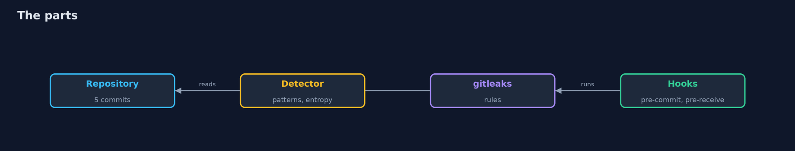
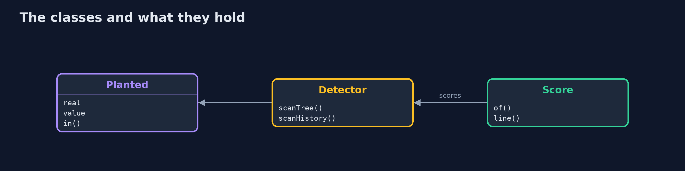
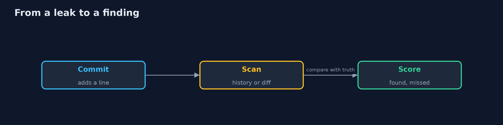
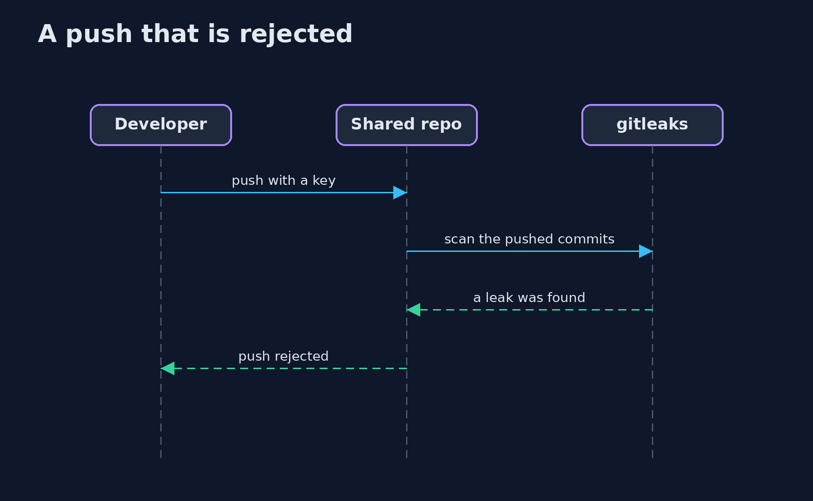

Secret Scanning
src/main/java/com/jk/explore/security/secretscan/
├── BankRepo.java The bank's repository as it grew: five commits, five real secrets, four look-alikes, and a clean-up commit that removes two files
├── Detector.java A small secret scanner written for this project: a few patterns and an entropy check, on files or on every line ever added
├── Finding.java Something a scanner reported: the rule, the file and the text it matched
├── Git.java A git repository driven through the git command line, with fixed author and dates so that runs do not differ
├── Gitleaks.java The real gitleaks command line (brew install gitleaks), asked for a JSON report
├── Planted.java A string put in the bank's repository on purpose, with the truth about it: a real secret, or a look-alike that is not one
├── Score.java What a scanner got right against what was planted
├── SecretScanningDemo.java
└── Sh.java Runs a program and returns what it printed, whether it worked or not
A bank's repository of 5 commits holds 5 real secrets and 4 look-alikes; a scan of the files now finds 2 of the 5 and a scan of the whole history finds 4 with gitleaks and 5 with a small scanner written in Java, and each gets something wrong (gitleaks misses a database password and flags a test key, the small scanner flags a documentation key and the same test key); an allowlist for documentation and fixtures leaves no look-alike flagged, and a baseline report reduces 7 findings to 1 new one; a pre-commit hook refuses a commit with a key, --no-verify gets around it, and a pre-receive hook on the shared repository rejects the push; and a fresh clone still holds a key that a later commit removed, so the key must be revoked.
A secret committed once is in the repository for good: removing the file removes it from the files, not from the history, and every clone carries the history. This project builds a bank's git repository in five commits with 5 real secrets and 4 look-alikes planted in it, and measures two scanners against that truth: a small one written in Java (patterns and an entropy check) and gitleaks. A Java program drives the real git and gitleaks command lines (brew install gitleaks); the demo is tagged integration: ./gradlew integrationTest.
What it shows:
- Files now or the whole history. The files at HEAD hold 2 of the 5 secrets; the whole history holds all 5. gitleaks finds 4, the small scanner 5.
- Misses and false alarms. gitleaks misses a database password (low entropy) and flags a test key; the small scanner flags a documentation key and the same test key. Neither is right about everything.
- An allowlist and a baseline. An allowlist for documentation and fixtures removes the look-alikes; a baseline turns 7 findings into 1 new one.
- Blocking. A pre-commit hook refuses a commit with a key, --no-verify skips it, and a pre-receive hook on the shared repository still rejects the push.
- The bill. A fresh clone still holds a key that a later commit removed: revoke first, then clean up.
Maps to: OWASP Top 10 A02 Cryptographic Failures and A07 · NIST SSDF PS.1 · CIS Software Supply Chain · MITRE ATT&CK T1552 Unsecured Credentials.
The idea in everyday terms
A house key left in a hotel room drawer. Taking it out of the drawer today does not help the guests who already copied it. The only fix is to change the lock, and the next best thing is a front desk that stops the key from being left there.
The scenario
A bank's payments team has committed keys and passwords over the years, and cleaned some of them up. The demo builds such a repository, scans it in several ways and then tries to commit and push one more.
Run
./gradlew run
The demo tells the story in 5 acts, each printing exact numbers that the tests check:
| Act | What it shows |
|---|---|
| 1. The history is the repository | The files now hold 2 of the 5 secrets; the whole history holds all 5. |
| 2. What each one gets wrong | gitleaks misses a database password and flags a test key; the small scanner flags a documentation key and the same test key. |
| 3. An allowlist and a baseline | An allowlist removes the look-alikes, and a baseline turns 7 findings into 1 new one. |
| 4. Blocking the next one | A pre-commit hook refuses the commit, --no-verify skips it, and a pre-receive hook rejects the push. |
| 5. The bill | A fresh clone still holds a key that a commit removed. |
Test
./gradlew test
12 tests in DemoRunsTest, DetectorTest, ScoreTest. The detector and the scoring are tested with no tools. The demo runs git and gitleaks (./gradlew integrationTest).
What the simulation got right, and what it left out
The git repositories and the gitleaks runs are real. The keys are made-up strings in the shapes of real ones, and none of them opens anything. The demo prints counts and names, never hashes or paths.
Technologies and versions
Every version below is pinned in the project's build files and was the latest stable release when the project was built.
| Technology | Version | Used for |
|---|---|---|
| Java | 25 | the language and runtime; a Gradle toolchain finds or downloads the JDK |
| Gradle | 9.8.1 (wrapper) | build and run; nothing to install, the wrapper downloads it |
| tools.jackson.core:jackson-databind | 3.1.5 | library the code uses |
| org.junit.jupiter:junit-jupiter | 6.1.3, set by junit-bom | JUnit 5: the tests (tests only) |
| org.junit.platform:junit-platform-launcher | 6.1.3, set by junit-bom | JUnit platform launcher, which Gradle needs to run the tests (tests only) |
| videokit | repository tool (tools/videokit) |
the narrated video and animation: Piper en_US-amy-medium, speed 0.8, longer pauses (the amy-slow voice) |
Learning Material
| Document | What it is for |
|---|---|
| Problem statement | the situation and what the project must show |
| Prerequisites | what you need to know first |
| Secret Scanning, explained | the acts in prose |
| Session guide | a one-hour lesson with exercises |
| Animated walkthrough | the acts step by step, narrated |
| Threat model | what is protected, who could harm it, and how, using STRIDE |
| Spec | what this project must be true of |
| Expected output | the golden demo output every test and every port checks against |
The idea in one picture
Scanners read the files or the history; hooks stop a push.

Where each piece sits
The truth, a scanner and the score.

How the data moves
A secret is found where it was added.

Who calls whom, in order

Video
video/secret-scanning-explained.mp4 (with .m4a audio and .srt subtitles) is built by video/build_video.sh. Rendered media is not committed.
What it costs
- Every scanner misses and flags, so a person reads the results.
- A hook on a laptop can be skipped, so the check must also run on the server.
- A key found in history has to be revoked, which can break production.
- An allowlist can hide a real secret.
- Scanning the whole history takes longer than scanning a diff.
When this is too much
A private repository with one developer and no cloud keys can rely on a pre-commit hook alone. A scan of the whole history is for the day a repository becomes shared, public or audited.
Where you have already met this
- A password in application.properties "for now".
- A key removed by a commit that is still in the log.
- A hook that everyone skips with --no-verify.
- A scanner that nobody has measured.
Where this sits
This project is part of the devsecops-pipelines module, which lets a pipeline stop what a person misses. The keys it finds are the ones the kubernetes-secrets project keeps out of the cluster.